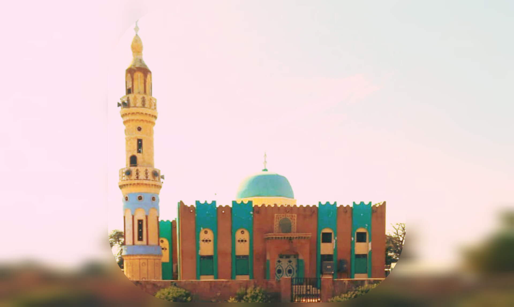
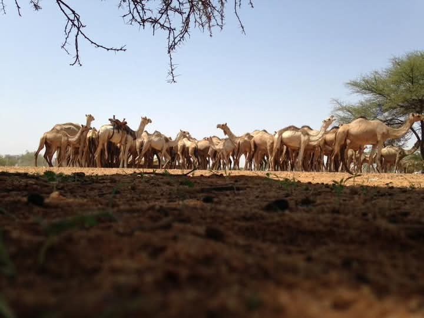
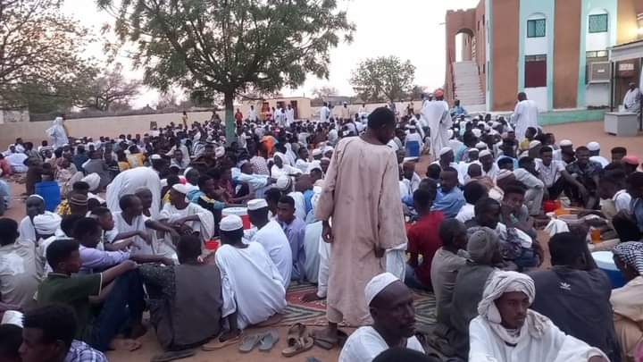
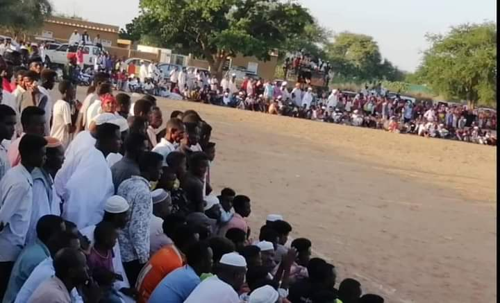
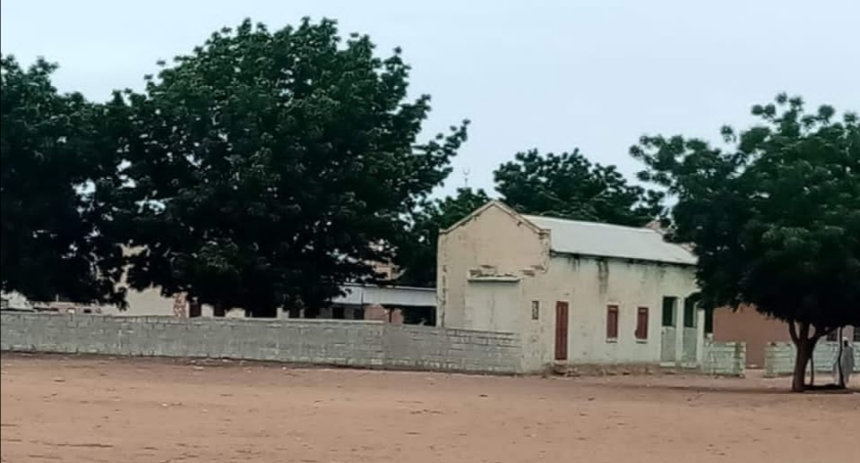
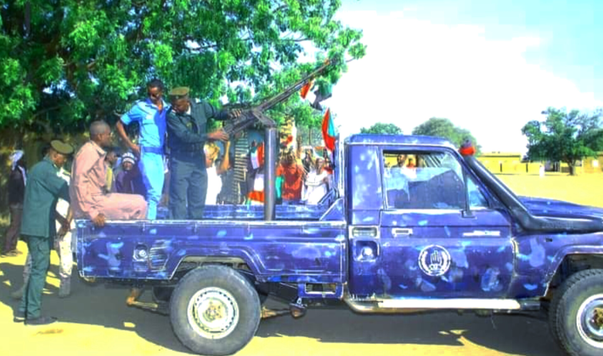
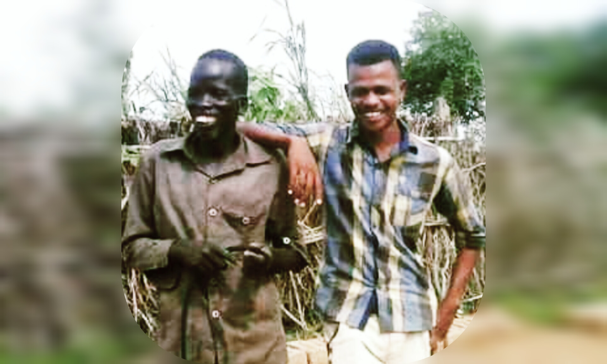
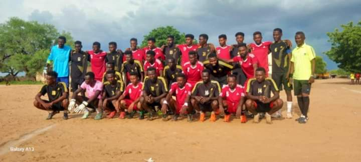

ولاية غرب كردفان - ادارية المجرور
التسمية والنشأة:

جغرافية المنطقه: رهد المجرور كان صغيرا شرقا حدود فيوق قريبه جدا كذلك شمالا حدود الضريس قريبة و جنوبا حدود حله معلي الشرتاية عثمان جاسر عين الشيخ سعيد حامد شطة كأول شيخ للمجرور. تقع المجرور غرب محلية الاضية وشرق ولايتي شرق وشمال دار فور ومن الجنوب تحدها محلية السلام بابنوسة من الشمال محلية غبيش . تتعبر نقطة تجمع لذا نجد أن البضائع والسلع تأتي من العاصة والابيض النهود غبيش بابنوسة والمناطق المجاورة ويتم التبادل التجاري > محاصيل < بضاعة وسلع . ترقد المجرور على بحيرة بترولـية عظيمة ، شهدت الاوآن الاخيره إستجراج البترول من حقل الزرقاء (ابوسُكر) . نجد أيضا أهمية المسارت والمعابر التي تحد من المشاكل الناجمة من حركة الرعاة والمزارعين في فترة الخريف . المسار الجنوبي يبدأ من التبون> الرقيل > ام دقيق > خروجاً جنوب ام جاك . المسار الشمالي يبدأ من شمال ابوسكر > الحماري> جمال الدين > فج الحلاء .
الثروه:

التطور: عام 1946 جاء ادم حامد و بصحبة صديقه عطرون قسم الله والد اسماعيل عطرون لكي يفتحوا دكاكين في المجرور لكنهم وجدو معارضة شديدة من شيخ المجرور شيخ شطة بحجه ان فتح الدكاكين سيؤثر علي اشجار الهشاب التي كانت منتشرة بكثرة في هذا الرهد و ما جاوره تدخلت الإدارة الأهلية بإمارة دار حمر بقيادة منعم منصور و اقنع شيخ شطة بأن يسمح لهم بفتح الدكاكين تم فتحها بعدها جاء الشايب توج والد عثمان توج بعدها جاء قبيلة الشعيبات سكنت غربا في دميرة تسمي دميرة عملوط قرب كدو في هذه المنطقة توجد أشجار هشاب بكثافة تسمي هشاب ادم حامد يعمل في طق الهشاب وقتها الشايب عبدالله تكتك والد دريدقة. من ثم حفر دونكي المجرور في1949ساعد أنشأ الدونكي في هجرة سكان القرى المجاورة للمجرور ف فصل الصيف وقتها تأتي اغلب القرى المجاورة و تسكن المجرور حتي يكونون قريب من الدونكي و يقومون ببناء الرواكيب و يسكنون فيها تمت تسميتهم بأسم الدمارة
النسيج الاجتماعي:


- شرتاوية اولاد برعاص منطقة المجرور
- شرتاوية الوايلية منطقة المجرور
- شرتاوية الصبحة منطقة ابوحميض
- شرتاوية الجخسيات منطقة التلاتات خمسين
- شرتاوية اولاد عامر منطقة مريود
المؤرثات الثقافية هو الفلكلور والتراث الشعبي والمؤرثات الكردفانية هنالك اتقان وابداع في الاداء الحركي التويا والكنداية والجراري الكشوك الحسيس الدوبيت وغيرها بها ترابط نسيج إجتماعي قوي في الافراح والاتراح .
التعليم: في عام 1952 انشئت مدرسة المجرور اول مدير المدرسة المجرور الشيخ سلام من الاضية وكانت المدرسة فى محل بيت اولاد الغالى السميح ثم نقلت إلى مكانها الحالى و لكن سرعان ما قام الحكومة باغلاق المدرسة بسبب قله الطلاب فيها نسبة عدم السكان القليلة في المجرور وقتها تحرك الريس ادم حامد و اجتمع باعيان البلد و اتفقوا على أن يقوم كل شخص بجلب عيال اهله من القرى المجاورة و بادر ادم اولهم و سافر الي منطقة صبي و جلب معه عيال اهله برعاص من صبي و كذلك فعل عثمان جاسر و توج من طلاب المدرسة الرعيل الأول منهم جادالله سالم من صبي و عثمان توج و عبدالحميد ادم حامد و ادم محمود و بعدهم جيل آخر منهم الفاتح ادم حامد و حميد عبد الباقي و معلي حمد معلي و ضوالبيت من سلبيات المجتمع في ذلك الوقت هو عدم الرغبة في التعليم و يقال بأن الشخص الذي يدرس يسمي صعلوق و الطالب لو لم تكن له شخصية و رغبة لا يستطيع مواصله الدراسة بسبب التنمر السايد حينها ومن طالبات المدرسة النابغات شادية ادم حامد التي احرزت المركز الثاني علي مستوى كل المحليات وقتها كان الامتحانات تجرى في النهود و كذلك الطالبه ام سلمة عبدالرحمن جاسر الرعيل الاول المتعلمين من أبناء المجرور المرحوم الباشمهندس عثمان توج والخبير الزراعى دفع الله احمد دفع البارئ 1946_1949 بمدرسة غبيش الصغرى ومعهم جاسر عثمان جاسر والمرحوم الصادق حاج النور الجليد وإجباره ادم جبر الدار من جبر الدار ومن ام ليلا السافر الكنانى أطال الله عمره ومعهم الطيب محمد احمد عقر الذى توفى بالعنبر الذى شبت فيه النار وذلك عام 1947م
شخصيات ساهمت في التعليم: وتم فتح مدرسة المجرور 1950 ومديرها الاستاذ الصادق حاج النور من الجوامعه وحامد سليمان والأستاذ إدريس احمد من ارمل هم حامد غبوش والحاج احمد دفع البارى ومحمد الهدى بريش ومحمود محمد احمد جاروده والباشمهندس جابر حامد وأحمد سالم هجيليج وعجب سالم هجيليج والعدل وحامد فعيمه والأمين احمد بليله وأبو نفل ادم النور وسليمان احمد بليله ونعمان حمد صافى والمرحوم إبراهيم ابوه وحميدان معيار من فج الحلا والمرحوم ابرهيم الخليل و عثمان حامد جباره ومحمد حمد جباره( كوه) واخرين والمرحوم حامد صالح وابراهيم جراب الراى (جرينغيس)المدرسة كان بها تلاميذ بالداخلية ومن امهات التلاميذ التى يعددن الطعام عاشة بت بشير وحواء حماد أم دليكه ووالدة ام شعر وجدتنا فاطمة بت مردس والتى لم تمكث كثيرا
المدرسه الثانوية: في عام 1988م تم إنشاء و افتتاح مدرسة المجرور المتوسطة بمجهود جبار من الاستاذ جمعة عبدالله بشير و نصب فيها كأول مدير للمدرسه افتتحت المدرسه بفصل دراسي واحد بعدها شد الاستاذ جمعه الرحال الي العاصمة الخرطوم هناك التقي بالباشمهندس عثمان توج الذي تبرع لها له ببناء فصلين دراسيين جديدين من المعلمون الذين عملوا بالمدرسه الاستاذ صلاح احمد حميدتي و الاستاذ حبيب ثم بعدها التحق بيهم الاستاذ ابراهيم سليمان و في 1990تم نقل مدير المدرسة الاستاذ جمعة عبدالله و خلفه مديرا للمتوسطة المجرور الاستاذ حمد ابوعضل
الصحة:

الموئسسات العدلية:

ازدهار التجارة: ازدهر سوق المجرور ولكن قبل سوق المجرور كان هناك سوق ذو سمعه واسع و هو سوق جمال الدين بقيادة الشيخ جمال الدين والد حسن جمال الدين . بسوق المجرور فرم ادم خميس و كشك الترزي أحمد الجله و مكتب الريس ادم حامد يمارس إنسان المجرور نشاطه فيما يعرف بإم دورور هنالك أسواق موسمية تنشط عاداً في فترة الخريف مع توغل قبائل العرب (البقارة) إلى الشمال وهي على مدار الاسبوع
| الخميس | الجمعه | السبت | الاحد | التلاتاء | الاربعاء |
| المجرور | الخويرات | الشحيط - الطويفره | الحماري - جبرالدار -ابوحميض -ام دقيق | ابوسكر | حميدان |
التعمير: عمار مجرور الفعلي بدأ بعد 1908بعد حضور مئات الأسر من المعاليا من مناطق ابوكارنكا والمزروب وشارف بعد تمردهم على السلطان على دينار ولجوئهم إلى دار حمربموافقة مفتش مركز النهود وإشراف الناظر اب دكة ووساطة القاضي اسماعيل ود الجيلي ...كان من زعماء حمر آنذاك الشيخ الطاهرحامد ,ابو ام ريدة وجابر وهجيليج وجاسر الكبير.ومن قيادات المعاليا جدنا الفكي عبد الرحمن عمر المعاليا سكن المجرور وعبد الدائم أسس الطويفرة والفكي سليمان عمرام ديبون أسس ام ديبون وابونفل أسس اب نفل والقريش أسس الرقيل وإسماعيل فجاق أسس شق التكو ونور الشام أسس بابيش واحمدجمال الدين من البرتي أسس جمال الدين ...كانت المجرور القديمة جنوب المجرور الحالية في طريق حلة معلي طويفرة واستمرت حتى 1947،(سنة جلينا) حيث حفرت بئر دونكي المجرورالاولى 1946والثانية1948... تم تركيب وفتح الدونكي والمدرسة معا عام1949...كان هناك تجار كثر مؤسسون لسوق المجرور في عامه الاول منهم جدناالفكي عمر عبد الرحمن وحاج النور الجليدي والنور اسحق وادم توقي وعبد الرحمن ام كشك وحامد معلي ولاحقا الطاهر الشيخ وعبد المنعم ابوجبة ...وخلوة الانصاري جاد الله كان يدرس فيها الشيخ عبد الرحمن الشنقيطي وهو الذي ساعد في حفظ اولاد عمنا الانصاري جاد الله للقران...وهو والد الدكتور حافظ عبد الرحمن الاستاذ الان بجامعة السودان فيماذكرت أن الشيخ سعيد والد محمد شتة وحمد وحامد هو نسيب عبد الرحمن ام كشك صاحب الأرض حوالي رهد المجرور وكان ذلك في مطلع القرن العشرين نحو1902/5وقد منحها له هدية
المؤسسات الادارية هي اكبر اداريات محلية الأضية من حيث المساحة والإنتاج الزراعي والحيواني والايرادات والسكان، إدارة التعلم إدارة الصحه إدارة الزراعة والإنتاج الحيواني إدارة المالية الإدارة العمومية مدرستين ثانوي مدرستين أساس داخل المدينة .
التنوع:

شخصيات مؤثره: من الشخصيات المؤثرة و صاحبة الفضل ف نشأت المجرور كان الريس ادم حامد صاحب النهضة الأول يرجع له الفضل ف كل شي تم بالمجرور ساهم ف تطورها اول من قام بإنشاء دكان و اول من جلب عربية بالمجرور و اول من ادخل القشارة لقشر محصول الفول السوداني و مساهماته لا تحصي ولا تعد و كان منزله مفتوحه للزوار من تجار و موظفين الحكومة و الطلاب و المسافرين من الشخصيات أيضا عثمان جاسر و كذلك محمود حماد الذي تنحدر اصوله من تشاد و عبدالرحمن جاسر يعتبر من أثرياء المجرور وقتها و حمد متعني والد تور حقار صاحب دكان مشهور في السوق و اخو حامد ابوعصا رجل يقال بأن في أواخر حياته تفرغ للمصالحة بين الناس و حلحلت المشاكل و لانه انسان نصوح صاحب حنكة كبيرة كذلك من المؤثرين عبدالمنعم ابوجبه و ادم خميس و توج زعيم قبيلة القمر و شيخ عجاك زعيم الدينكا و كذلك أحمد عبدو من النهود كان موظفا في الحكومة بالمجرور
الرياضة

# ملاحظة # عاشت المجرور حرب أهلية وهي أيضا معبر رئسي للحركات المسلحة القادمة من دار فور ، مما ألقت بظلالها على المنطقة في عدم الاستقرار والتنمية لنزوح بعض المواطنين